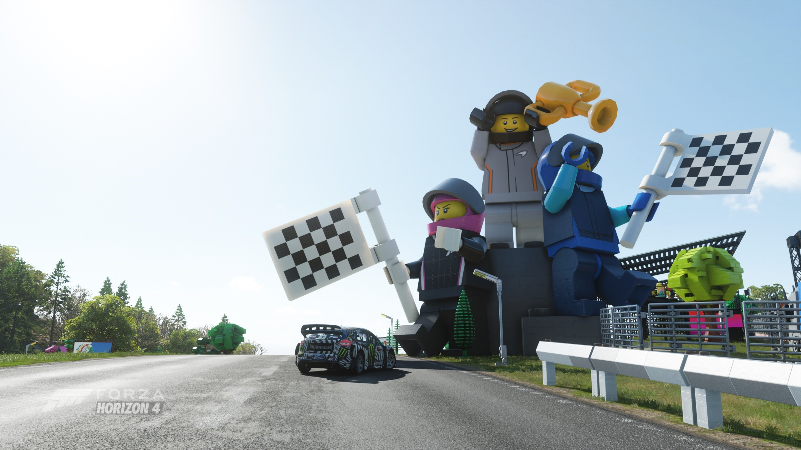
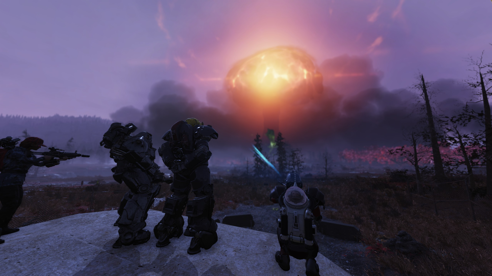
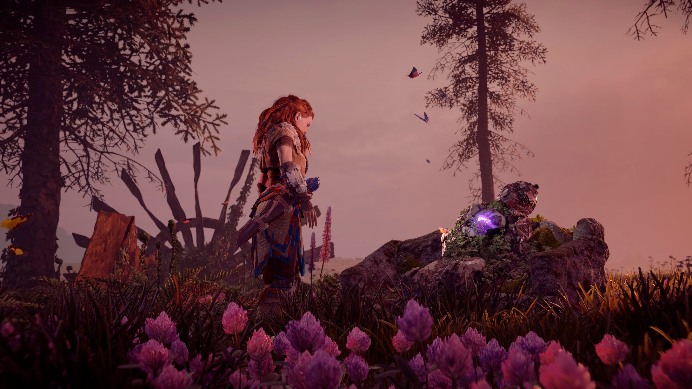
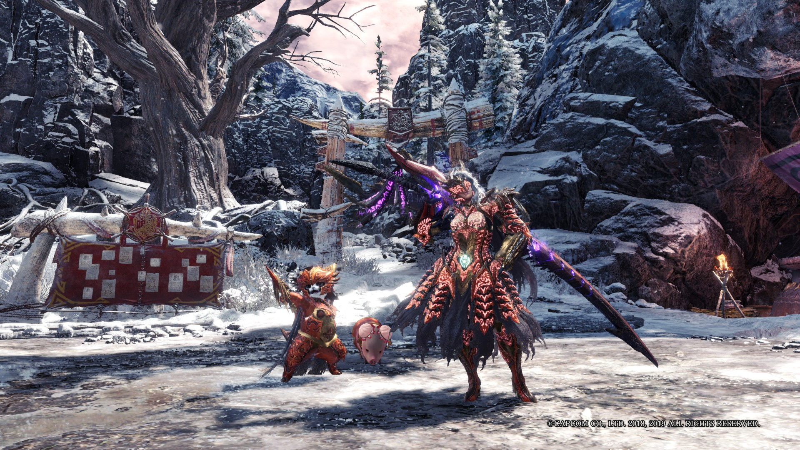
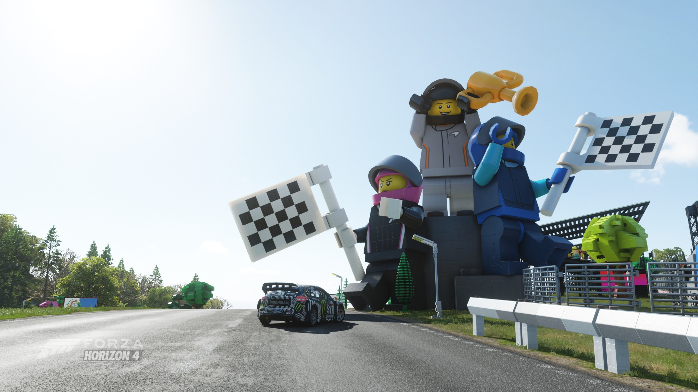
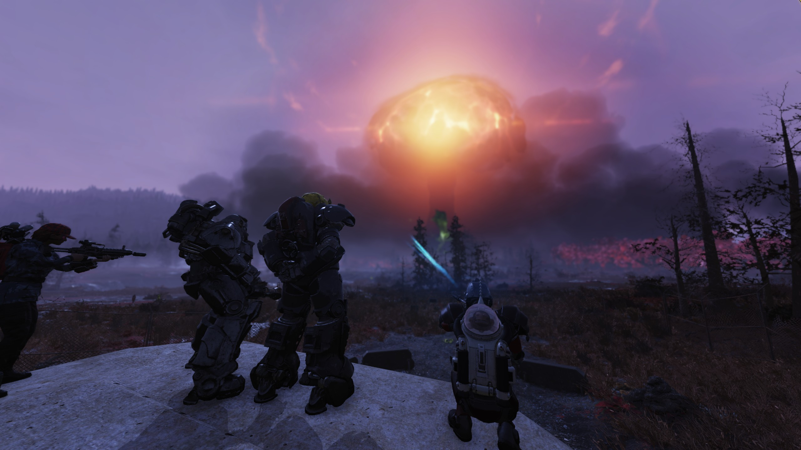
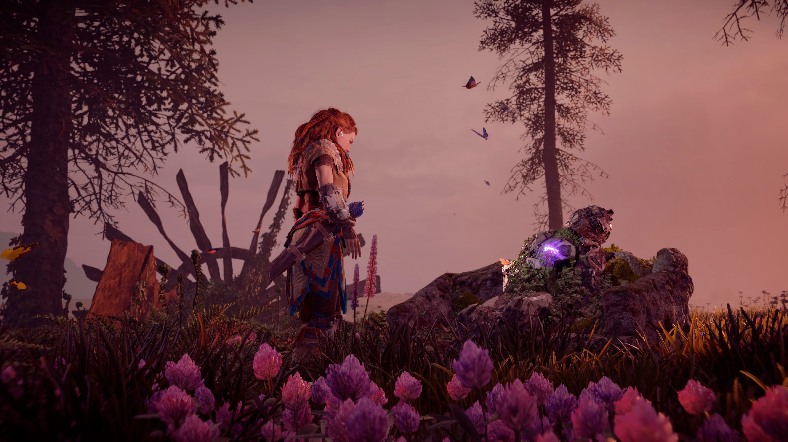
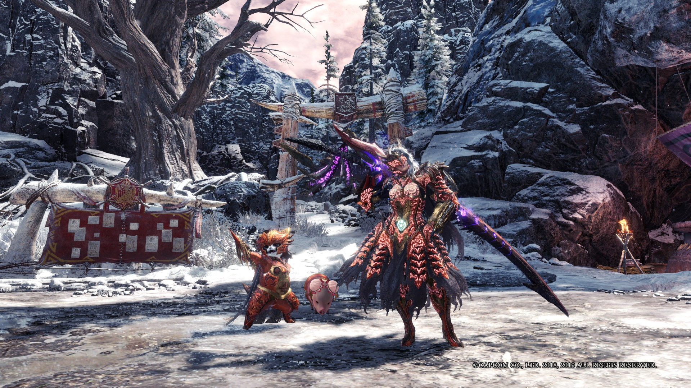

ABOUT ME
My name is Woon Zhen Fei.
I graduated from University of Nottingham Malaysia Campus in 2016.
Currently taking CS50x.
My favourite activity during free time is video game!
CS50X PROGRESS
Week 0 - Scratch
Week 1 - C
Week 2 - Arrays
Week 3 - Algorithms
Week 4 - Memory
Week 5 - Data Structures
Week 6 - Python
Week 7 - SQL
Week 8 - HTML, CSS, JavaScriptWeek 1 - C
Week 2 - Arrays
Week 3 - Algorithms
Week 4 - Memory
Week 5 - Data Structures
Week 6 - Python
Week 7 - SQL
Week 9 - Flask
Week 10 - Emoji
FAVOURITE GAME SCREENSHOTS
   
   